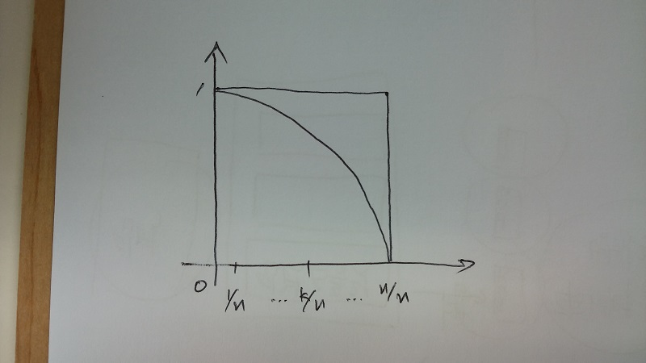
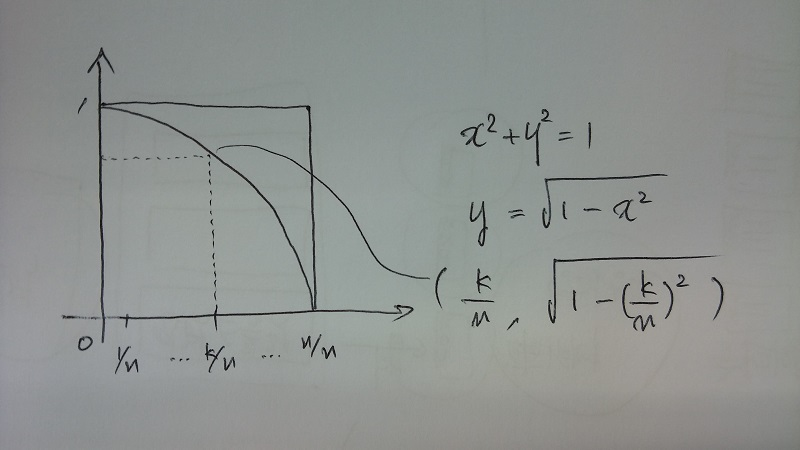
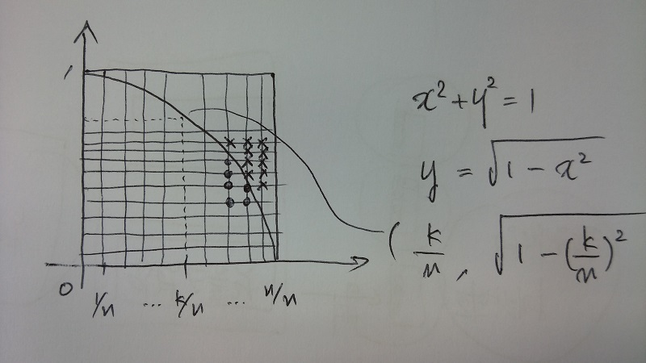
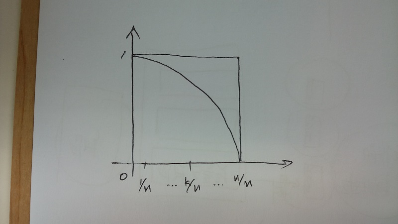
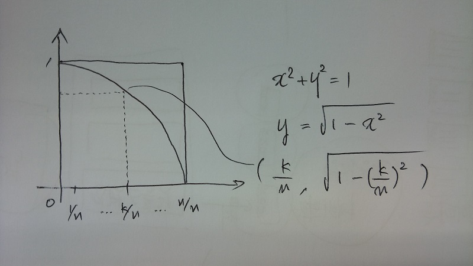
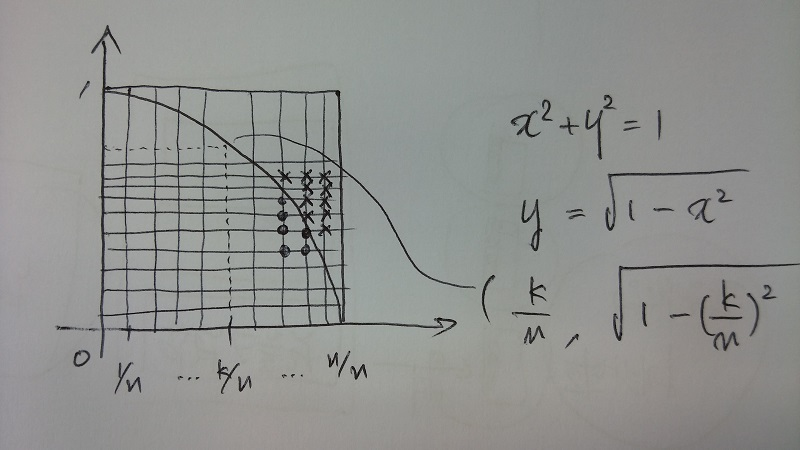
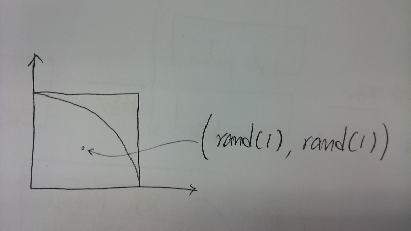
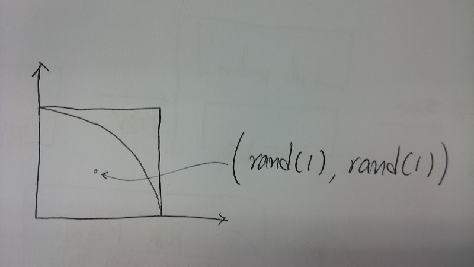

또 다른 \( \pi \) 에 대한 근사값
3/2/2016
어제 \( \pi \) 를 정의대로 원둘레를 이용하여 근사한 후 또 \( \pi \) 가 들어간 게 어디 없다 생각해보다가 반지름이 \( r \) 인 원의 넓이가 \( \pi \cdot r^{2} \) 인 것을 이용할 방법도 떠올랐다.
먼저 반지름이 1인 원을 그린 다음 1 사분면의 \( x \) 축을 \( n \) 개로 분할한다.

원은 좌표 평면에서 \( x^{2} + y^{2} = 1 \) 위에 있으므로 \( y \) 가 \( \sqrt{ 1 - (x좌표)^{2}} \) 보다 작으면 원의 내부에 존재하게 된다.

이제 [0, 1] 구간에서 \( \frac{1}{n} \) 단위로 \( y \) 좌표를 자른 후 \( x \) 가 \( \frac{k}{n} \) 일 경우 \( \sqrt{ 1 - (\frac{k}{n})^{2}} \) 보다 작은 점 - 아래 그림에서는 동그라미로 표시된 격자들의 수를 전체 격자의 수로 나누면 사분원의 넓이의 근사값이 된다.

위의 시나리오를 코드로 표현하면 아래와 같다.
먼저 반지름이 1인 원을 그린 다음 1 사분면의 \( x \) 축을 \( n \) 개로 분할한다.

원은 좌표 평면에서 \( x^{2} + y^{2} = 1 \) 위에 있으므로 \( y \) 가 \( \sqrt{ 1 - (x좌표)^{2}} \) 보다 작으면 원의 내부에 존재하게 된다.

이제 [0, 1] 구간에서 \( \frac{1}{n} \) 단위로 \( y \) 좌표를 자른 후 \( x \) 가 \( \frac{k}{n} \) 일 경우 \( \sqrt{ 1 - (\frac{k}{n})^{2}} \) 보다 작은 점 - 아래 그림에서는 동그라미로 표시된 격자들의 수를 전체 격자의 수로 나누면 사분원의 넓이의 근사값이 된다.

위의 시나리오를 코드로 표현하면 아래와 같다.
#!/usr/bin/perl
# aaction.pl [x 축 격자수]
use strict;
use warnings;
my $n = shift;
$n = 100 unless(defined($n));
my $in_count = 0;
my $y = 1;
foreach my $k (1..$n){
my $x = $k/$n;
while($x**2 + $y**2 > 1){
$y -= 1/$n;
}
$in_count += $y * $n;
}
printf "pi is %s\n", 4*$in_count/($n**2);
결과는 아래와 같다.
$ perl aaction.pl 10 pi is 2.72 $ perl aaction.pl 100 pi is 3.1016 $ perl aaction.pl 1000 pi is 3.137548 $ perl aaction.pl 10000 pi is 3.1411902 $ perl aaction.pl 100000 pi is 3.1415525416 $ perl aaction.pl 1000000 pi is 3.141588649676 $ perl aaction.pl 10000000 pi is 3.14159225309212 $ perl aaction.pl 100000000 pi is 3.14159261741863
대충 이렇게 생각하다가 갑자기 아 뭐 이렇게 힘들게 하고 있나, 그냥 [0,1] 구간으로 정사각형을 만든 후 랜덤하게 점을 찍어서 원 안에 들어가는지 - 다시말해 원점과의 거리가 1보다 큰지 비교하면 되지 않나 란 생각이 들었다. 도식하자면 아래와 같으며

코드는 아래와 같다.

코드는 아래와 같다.
#!/usr/bin/perl
# baction.pl [랜덤하게 수행할 횟수]
use strict;
use warnings;
my $n = shift;
$n = 100 unless(defined($n));
my $in_count = 0;
foreach my $k (1..$n){
my $x = rand(1);
my $y = rand(1);
if($x**2 + $y**2 < 1){
$in_count ++;
}
}
printf "pi is %s\n", 4*$in_count / $n;
보면 알겠지만 그냥 변이 1인 정사각형안에 점을 랜덤하게 찍어대서 원점과의 거리가 1보다 작은 것들의 수를 구한다.
결과는 아래와 같다.
결과는 아래와 같다.
$ perl baction.pl 10 pi is 3.6 $ perl baction.pl 100 pi is 2.84 $ perl baction.pl 1000 pi is 3.212 $ perl baction.pl 10000 pi is 3.1496 $ perl baction.pl 100000 pi is 3.14396 $ perl baction.pl 1000000 pi is 3.14026 $ perl baction.pl 10000000 pi is 3.142596 $ perl baction.pl 100000000 pi is 3.14151104
이제 당분간 \( \pi \) 는 생각이 안 날 것 같다.